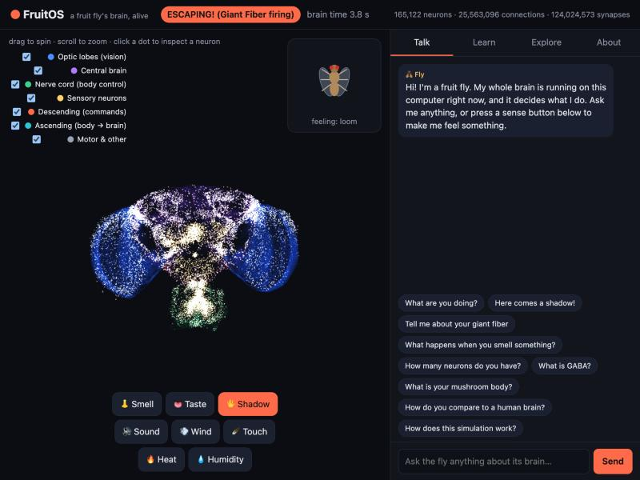

FruitOS boots into a live simulation of the complete wiring diagram of a fruit fly's nervous system. Watch it think, give it sensations, ask it questions, and learn how brains work.
Free and open source · Based on Arch Linux · Boots with GRUB · Works offline
Every neuron sits where it sits in the real fly, coloured by brain part. Spin it, zoom in, and click any neuron to see what it connects to.
Wave a shadow at the fly and nothing is scripted: looming detectors fire, the Giant Fiber fires, and the fly escapes, all from its own wiring.
"What are you doing?" "What is GABA?" "What happens when you smell something?" Every answer is computed from its real brain, never made up.
Smell, taste, sound, wind, touch, heat, humidity and a looming shadow, each driving a real receptor cell type.
Nine lessons, from "what is a synapse" to the escape circuit and memory, with quizzes calculated from the brain itself.
No GPU, no internet, no account. The brain uses at most half a CPU core and pauses when nobody is watching.

The moment after pressing Shadow: the fly's own Giant Fiber decides to escape.
The brain is the MaleCNS v1.0 connectome: the complete central nervous system of a male Drosophila melanogaster, mapped by HHMI Janelia, Google and collaborators and published in Cell in 2026. FruitOS runs it as a network of leaky integrate-and-fire neurons, following Shiu et al. 2024 (Nature).
The fly's behaviour comes only from command neurons whose jobs were shown in experiments:
| Command neuron | What the fly does | Shown by |
|---|---|---|
| DNp01 "Giant Fiber" | escape jump | von Reyn et al. 2014 |
| MDN "moonwalker" | walk backward | Bidaye et al. 2014 |
| DNa01, DNa02 | steer left / right | Rayshubskiy et al. 2020; Yang et al. 2023 |
| DNp09 | walk forward | Bidaye et al. 2020 |
It is a simplified model, and it says so: neuromodulators like dopamine, gap junctions, neuron shapes, a body and learning are not simulated. Ask the fly "how does this simulation work?" and it will tell you exactly what was changed to run this dataset.
Download the latest fruitos-*.iso from Releases,
verify it with its .sha256 file, then boot it in a virtual machine (VirtualBox, VMware, QEMU, UTM with UEFI) or write it to a USB stick.
Needs an x86_64 PC or VM with 4 GB RAM (8 GB recommended).
Or run just the learning app on macOS, Linux or Windows:
pip install numpy scipy pyarrow pandas bash tools/fetch_data.sh raw python3 tools/prepare_data.py --raw raw --out data cd app && FRUITOS_DATA=../data python3 -m fruitbrain.server # then open http://127.0.0.1:8642